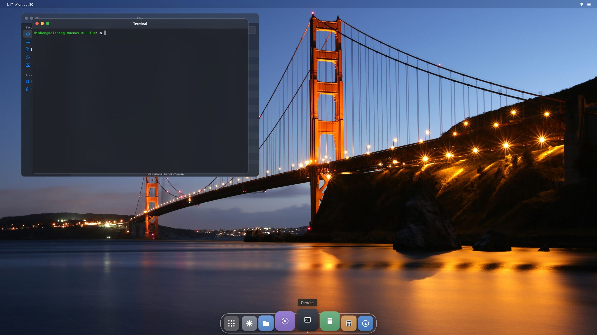
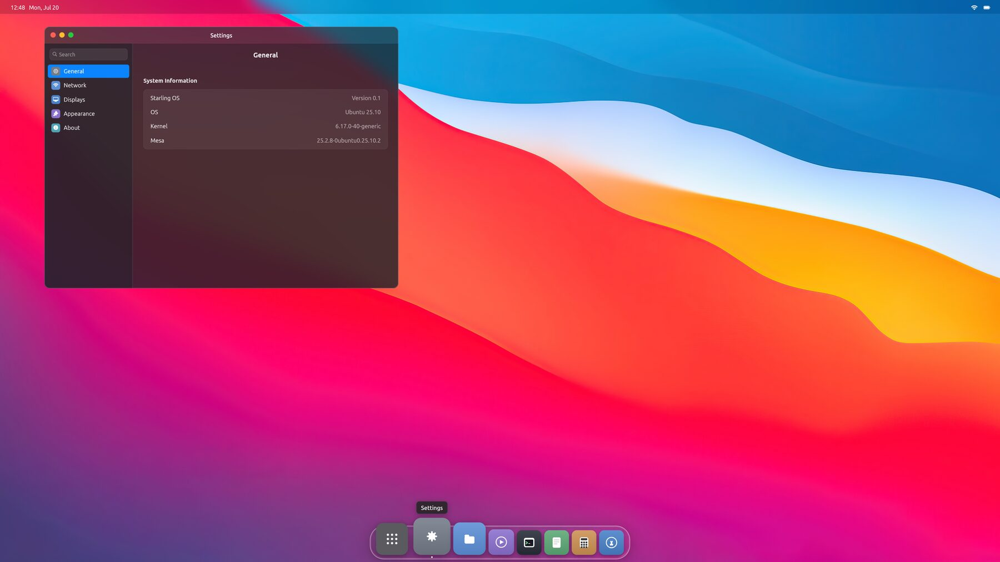
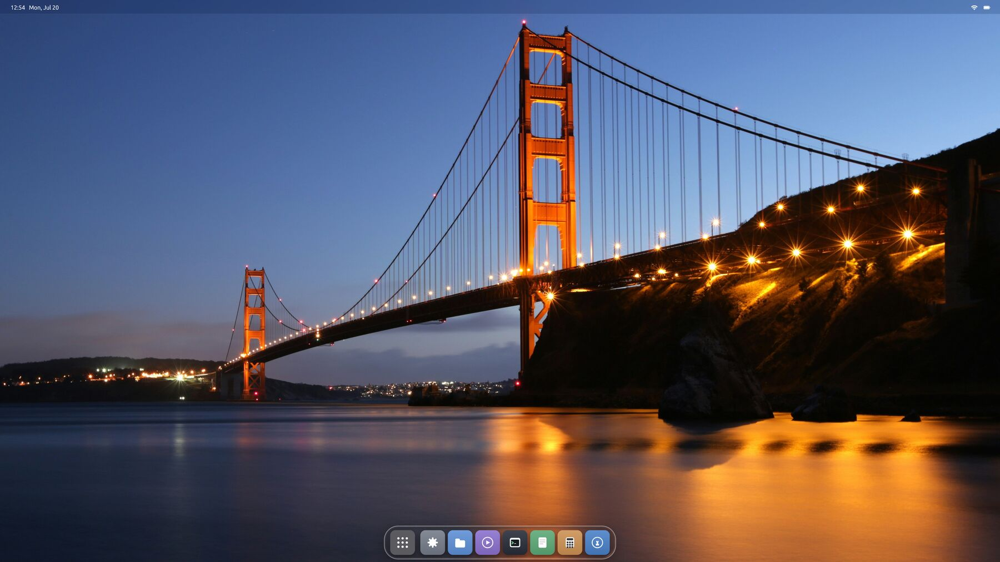

A desktop environment
built for what comes next
Starling is a Linux desktop written in Swift. It runs directly on the GPU, composites your real apps natively, and treats AI agents as first-class tenants rather than visitors.

Everything you expect, and it's fast
A complete desktop environment — not a window manager you assemble yourself. Spaces, a dock, a menu bar, real multi-monitor support, and a set of first-party apps that come with it.
Straight to the hardware
Starling talks to the GPU directly through DRM/KMS. There's no X server and no second compositor underneath it — one less layer between your input and the pixels.
Spaces & Mission Control
Slide between virtual desktops, carry a window with you as you go, and pull back to see everything at once. Fullscreen apps get a space of their own.
Monitors that just work
Plug a display in and it appears — with its own dock, its own menu bar and its own spaces. Unplug it and your windows come home instead of vanishing.
Your real apps
Chrome, Slack, VS Code, Zoom, mpv, GTK and Qt apps — composited natively with zero-copy GPU buffers, not streamed or emulated. An X server is built in for the holdouts.
Apps included
Files, Terminal, Settings, Calculator, Text Editor, Image Viewer and an App Store that installs software from the Ubuntu archive — each one a separate process.
Crashes stay contained
Every app runs in its own process and shares GPU buffers with the shell. When one falls over it takes its window with it — and nothing else.
The first desktop where agents are tenants
Most tools bolt AI onto a desktop by screenshotting it and guessing at coordinates. Starling gives agents a place to live and a proper way in.
- Their own space. Agents work in a dedicated AI Space with their own windows — visible when you want to watch, out of the way when you don't.
- They act by label, not by pixel. The desktop exposes what's actually on screen, so an agent clicks Save because it found Save — not because something looked like a button at those coordinates.
- Permission is explicit. Every capability an agent asks for goes through a broker that denies by default and records what was granted.
- Even Windows apps. Excel, Word and PowerPoint appear as ordinary windows on your desktop, and agents drive them through the real application — formulas and all.

An unusual foundation
Starling is built on Flutter's rendering engine — but the entire framework above it was rewritten in Swift, and the desktop it draws is also the display server and the compositor.
Swift all the way up
Flutter's framework — widgets, layout, painting, gestures, animation — was ported from Dart to Swift and compiles ahead of time. Flutter's battle-tested rendering model, with a natively compiled language and no runtime to warm up.
The shell is the compositor
Normally a compositor hosts your toolkit. Starling inverts that: a Wayland compositor lives inside the desktop itself, so a Chrome window is a texture in the same scene as the dock — sharing GPU memory, never copied.

One package, then pick Starling at login
# Ubuntu 25.10 or 26.04, on an amd64 machine sudo apt install ./starling-desktop_0.1-1_amd64.deb # then log out, choose "Starling" from the session menu, and sign in